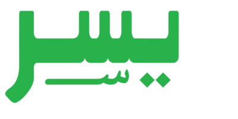

Al-Qur’an diperlakukan sebagai sumber data bahasa yang utuh dan konsisten. Setiap kata, bentuk, dan struktur dianalisis langsung dari teks Al-Qur’an, bukan dari contoh yang terpisah dari konteksnya.
Bahasa Arab dipahami melalui:
Dengan cara ini, pemahaman bahasa lahir dari data nyata, bukan asumsi.
Pendekatan ini membantu melihat bahasa Al-Qur’an sebagai sistem yang teratur dan bermakna.
Metode Yassir dirancang untuk berbagai kalangan yang ingin memahami bahasa Al-Qur’an secara bertahap dan sistematis.
Pendekatan ini dapat digunakan dari pemahaman dasar hingga analisis lanjutan.
Singkatnya, Metode Yassir mengajak Anda menjelajahi bahasa Arab Al-Qur’an melalui data, struktur, dan analisis—bukan sekadar hafalan.
Mulai Mempelajari Metode Yassir